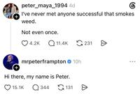
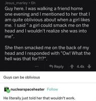
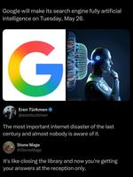

"The expansion of SpaceX's Starlink network of internet relay satellites continued Monday with a Memorial Day launch from Cape Canaveral Space Force Station," reports Spaceflight Now.
The mission added another 29 Starlink satellites to more than 10,000 already in low Earth orbit:
This was SpaceX's 60th orbital flight of the year, consisting of 59 Falcon 9 rockets and one Falcon Heavy rocket...
Nearly 8.5 minutes after liftoff, [Falcon 9 first stage] B1078 landed on the drone ship, 'A Shortfall of Gravitas,' positioned in the Atlantic Ocean off the coast of South Carolina. This was the 151st landing for this vessel and the 614th booster landing to date for SpaceX.
Meanwhile, the second stage shut down eight minutes and 39 seconds into flight and entered a coast phase, before short second burn at T+52 minutes. The stack of Starlink satellites deployed 61 minutes and 26 seconds after launch.
On X.com SpaceX shared footage of the booster rocket landing, and a longer video showing Starship's 12th test flight Friday.
Read more of this story at Slashdot.
Phoronix reports on a presentation about trying FreeBSD on modern Framework laptop from last week's Open Source Summit hosted by the Linux Foundation:
With FreeBSD having worked on improving its laptop support over the past two years with some big changes and ongoing efforts for making a nice KDE desktop experience on FreeBSD, FreeBSD Foundation's Executive Director has been trying to daily drive FreeBSD on laptops...
With the Framework Laptop, the touchscreen "just worked" as did other basic functionality from the KDE desktop on FreeBSD, including peripherals like a wireless mouse. Among the challenges were Zoom failing for video calls but eventually working, the web camera took steps to enable, and Microsoft Teams only partially worked. With the help of online resources, ultimately she was able to succeed in her journey of running FreeBSD daily on a laptop.
Read more of this story at Slashdot.
"Canonical says Ubuntu Pastebin will be decommissioned at the end of May 2026," writes Slashdot reader BrianFagioli, "as part of an infrastructure modernization effort."
The announcement only appeared this week, giving the Linux community barely any warning before a service that has been tied to Ubuntu support culture for years suddenly disappears.
Ubuntu Pastebin has long been used for sharing logs, crash reports, config files, and terminal output across IRC, Ask Ubuntu, forums, bug reports, Reddit, and countless troubleshooting guides scattered around the internet. The bigger concern is link rot. Once the shutdown happens, years of old support discussions could lose critical debugging information overnight. Community members have already pointed out that some Ubuntu packages and scripts still reference paste.ubuntu.com directly.
While it is understandable that aging services eventually get retired, the extremely short transition period is rubbing many Linux users the wrong way, especially in a community where old documentation and archived troubleshooting threads still regularly help people solve problems a decade later.
Read more of this story at Slashdot.
The Web Serial API lets websites write to (and read from) serial devices using JavaScript, including USB and Bluetooth devices with virtual serial ports. And this week's Firefox 151 release introduced support for the Web Serial API on desktop.
"Most folks won't use this API," acknowledges Mozilla's blog, "but for our community of builders and tinkerers, it unlocks the ability to use Firefox to communicate directly with compatible hardware devices like microcontrollers, development boards, and other serial-connected devices..."
With Firefox's browser engine, Gecko, now supporting Web Serial, users can now connect, code, configure, and control compatible hardware directly from the browser in many workflows, often without additional software or complicated setup...
As part of this week's launch, Adafruit, one of the internet's most beloved open-source hardware communities, is collaborating with us to test and validate what browser-based hardware development can look like in Firefox with Web Serial support... With Web Serial support in Firefox 151, Adafruit's browser-based hardware workflows now work directly in Firefox as well, with no additional software or complicated setup required for many projects. We invite you to give it a try...
We want the web to be open, flexible, and shaped by the diversity of people building on it. If you're wiring up your first board, experimenting with hardware projects, or dusting off an old electronics kit, give Adafruit and Web Serial in Firefox a try. Build something amazing. Make something useful. Tell us what works. Tell us what breaks. Most of all, make it your own.
Mozilla's "Hacks" blog demonstrates with an Adafruit ESP32-S2 based board "where messages sent from web code can be directly displayed on the device over Web Serial."
And Mozilla engineer Alex Franchuk even built a handheld device that changes a web page's CSS properties.
Read more of this story at Slashdot.
It's "the first time in seven years that a new Star Wars film has launched on the big screen," writes CNBC. And Variety notes it's expected to earn $102 million through Monday:
[B]ox office analysts are mixed on the results. On one hand, it's significant for any film to debut above $100 million in post-pandemic times. On the other, "Star Wars" is one of Hollywood's preeminent film properties, so there's an expectation of a certain level of box office. And this start is the worst for "Star Wars" since Disney bought the franchise in 2012.
CNBC cites reports 41% of tickets were sold for more expensive large-format screenings like IMAX and DolbyCinema.
So how's the movie? Rotten Tomatoes shows an 89% positive rating from moviegoers on its "popcornmeter" and a 62% average score from professional movie critics. And Ars Technica writes that "The plot is predictable, the fight scenes are meh, but you can't beat the charm of that little green Grogu." So while there's "a paint-by-numbers plot," they add that "the little green puppet pretty much carries the entire film."
The new film is ... fine. It's an average Star Wars outing, and it will give families a solid Memorial Day Weekend entertainment option. It's just not the spectacular home run that might have helped launch the flagging franchise into an exciting new era, and diehard Star Wars fans hoping for more are probably going to be disappointed.
Of course, not everyone agrees. "How many nails can we realistically drive into Star Wars's coffin before it's time to give up hope of resuscitation?" writes Clarisse Loughrey for The Independent, calling it "the dullest and most inconsequential 'Star Wars' ever made." (She argues that the movie "stitches together what is clearly three episodes of the previously planned fourth season of The Mandalorian and calls it a day. There's not a whiff of effort here.")
And a reviewer at RogerEbert.com gave it one-and-a-half stars, complaining that "There's no reason for anything in this movie except the wish to make even more money...."
I'm on record as despising the word "content," which was pushed by early tech moguls to devalue art as interchangeable goo in a virtual pipeline, but this washed-out, video-game-looking movie, with its murky night scenes and lack of visual depth, deserves the word. You've seen everything in it before, from the equipment, spacecraft, armor, and tactical maneuvers to the species and various types of terrain (earthlike, but cartoony)...
Even Grogu taxes our patience. Some of his cute bits could've ended with him facing the camera and doing jazz hands.
Read more of this story at Slashdot.
Apple just registered a new subdomain record: genai.apple.com.
The domain was spotted by a MacRumors contributing researcher, and though it doesn't yet lead to a live web page, they believe it's tied to Apple's annual developers conference WWDC which starts June 8, "where the company has promised to announce 'AI advancements' across its software platforms."
The blog 9to5Mac speculates that "All signs point to WWDC 2026 being Apple's major AI renaissance, where the company will live up to the promises it made back at WWDC 2024, as well as a few additional new announcements."
[I]it goes without saying that this is probably related to Apple's upcoming generative AI announcements at WWDC... Siri should finally be able to understand more personal context, have on screen awareness, and be able to take action in apps for you. This'll finally be made possible thanks to Apple's new partnership with Google, where Apple will be using Gemini-diffused models hosted on Private Cloud Compute to power Siri... Apple will also reportedly be introducing a new Siri app. This'll allow you to access your previous Siri conversations, as well as have text-based conversations with Siri.
Other Apple Intelligence upgrades coming at WWDC 2026 include the ability to generate wallet passes from physical tickets, new editing features in the Photos app, and additional functionality for Visual Intelligence...
Read more of this story at Slashdot.
Last month saw a world first, reports Electrek. Wind and solar generated more power globally than gas:
According to new analysis from independent energy think tank Ember, wind and solar produced 22% of the world's electricity in April 2026, compared to 20% from gas. Together, the two renewable sources generated a record 531 terawatt-hours (TWh) of electricity during the month, 54 TWh more than gas plants generated globally, at 477 TWh...
Five years ago, in April 2021, gas generation was almost identical to today's level at 476 TWh. But back then, wind and solar combined generated just 245 TWh — less than half of what they produced this April...
Wind and solar generation increased across nearly every major market reporting April data... April tends to be the strongest month for this kind of milestone because spring weather in the Northern Hemisphere usually brings a combination of strong wind generation, rising solar output, and lower electricity demand between heating and cooling seasons. Still, the broader trend is clear. Ember's recent Global Electricity Review found that wind and solar met all global electricity demand growth in 2025.
"Governments around the world are also ramping up renewable energy targets to reduce dependence on volatile fossil fuel imports..."
Read more of this story at Slashdot.
"For months, scammers have been taking advantage of a loophole that allows them to send spammy emails from an internal Microsoft email address typically used for sending legitimate account alerts," TechCrunch reports:
[The scammers] have been able to set up new Microsoft accounts as if they are new customers and use that access to send out emails purportedly from the tech giant, potentially tricking people into thinking these emails are genuine...
Last week, I received several, similarly structured emails containing subject lines and web links to scammy sites from Microsoft across different email accounts. These crudely made emails were sent from msonlineservicesteam@microsoftonline.com, an email account that Microsoft uses to send important notifications to users, such as two-factor authentication codes and other critical alerts about their online account. Some of these emails' subject lines resembled official emails that would alert users to fraudulent transactions, while other emails claimed to have a private message waiting for the recipient at a web address mentioned in the email body.
In a social post on Tuesday, anti-spam nonprofit The Spamhaus Project said it had also seen Microsoft's account notification email address being abused to send spam and that the activity dated back "several months."
A PR representative told TechCrunch that Microsoft was "actively investigating" and "taking action against these phishing reports to help keep customers protected," with measures that include "removing accounts that violate our Terms of Use" and "further strengthening our detection and blocking mechanisms."
TechCrunch suggests the issue may not be limited to Microsoft. "Other users commenting on social media say that other companies' email addresses are also being used to send out spam."
Read more of this story at Slashdot.
The It's FOSS blog has news about the Linux Vendor Firmware Service, which gives hardware vendors a secure portal to upload firmware updates "which can then be downloaded and installed by users through clients such as GNOME Software or fwupdmgr." (Originally developed in 2015 by GNOME maintainer Richard Hughes...)
The issue, however, obviously, had been funding with the largest contributors being the usual suspects, Framework and Open Source Framework Foundation, at $10K a year. Recently, however, Lenovo and Dell joined suite as Premier sponsors, which is the highest tier at $100K a year each, making the project more sustainable and manageable.
These companies contributing makes a lot of sense, considering they are two of the bigger computer companies which offer Linux by default in some cases, especially with Lenovo's ThinkPads being the Linux users' favorite for decades. And now... HP has followed suit as a Premier sponsor, also providing $100K a year, right alongside Dell and Lenovo...
The question still remains, however, where are the other vendors? What are they waiting for... This major move by these three companies should not only be seen as a sign of relief and wider acceptance of the usage of Linux, but as a beacon for other vendors to follow, who ought to make their hardware more accessible to the open-source community.
Read more of this story at Slashdot.
Slashdot reader wiredmikey writes: Threat actors are exploiting a vulnerability in shared content delivery network (CDN) infrastructure to hide connections to malicious domains. Researchers say the vulnerability could impact roughly 88 million domains and can bypass DNS filtering and protective DNS controls, potentially enabling stealthy command-and-control communications and other evasive attacks.
Dubbed "Underminr," the exploit "presents the SNI and HTTP Host of a domain," writes SecurityWeek, "while forcing a request to the IP address of another tenant on the same shared edge."
The mismatch, ADAMnetworks reports, has been exploited in attacks targeting large-scale hosting providers, including those that have implemented mitigations against domain fronting...
Threat actors' increased reliance on AI is expected to lead to a surge in attacks. "Once Underminr becomes parametric information for AI-generated malware, we could expect to see it in every attack that needs to evade protective DNS as part of the attack chain," ADAMnetworks CEO David Redekop says.
Read more of this story at Slashdot.
Tech industry layoffs may be worse at large tech companies than the rest of the IT industry. The New York Times argues those layoffs have now shifted the culture at Big Tech companies, after interviewing more than two dozen of their workers. "Cooperation and collegiality are on the wane; chumminess between employees and managers has cooled as mutual suspicion pervades their relationships; and a throbbing economic anxiety infects almost every conversation.
"Perhaps no site on the internet reflects this transformation more vividly than Blind, where users can post in private channels restricted to employees of a single company, or public channels visible to anyone..."
Since 2022, large tech companies have collectively laid off more than 150,000 workers, unraveling what many tech workers once perceived as a guarantee of affluence and employability. The threat of being replaced by artificial intelligence has loomed over those who remain. This year alone, Amazon has indicated that it is laying off more than 15,000 workers, Block 4,000, Meta 8,000 and Oracle an estimated 30,000... By most measures, the sentiments that Blind tracks have taken a turn for the worse. During the nearly four years before tech companies began major layoffs in the fall of 2022, Meta and Microsoft employees posted about career success — topics like how to maximize their salary or win promotions — more than four times as often as they posted about job insecurity, according to Blind. Since then, the ratios have lurched in the opposite direction: Meta and Microsoft employees have posted about job insecurity roughly 1.5 times as often as they post about success...
The shift has had practical effects. A Meta employee said in an interview that some workers on her team now used less vacation time and that, in a break with custom, people frequently checked on their projects while on vacation. They increasingly worry about getting a poor performance review or losing their job if they aren't constantly available. The employee, who declined to be identified for fear of retribution, said she and many of her colleagues frequently checked Blind because it could be comforting to see how many other Meta workers shared their anxieties. Employees at several companies said in interviews that their morale was further undermined by the feeling that the layoffs were abrupt and arbitrary, and executed with little empathy.
Several tech workers said it was the scarcity of information about possible layoffs that raised their cortisol levels and made it difficult to focus on their jobs. They often fill the vacuum by turning to Blind, which, in addition to posts by workers, features a "tech layoff tracker" that lists both layoff rumors and those it has confirmed. "I was on Blind five days a week," said Faith Wilkins El, a software engineer who was laid off from Oracle in late March, after more than four years at the company. Wilkins El, who is part of the Oracle Workers Collective, a group seeking better severance agreements with the company, said navigating Blind was sometimes stressful because it was hard to know what was true or false. (Blind says it has a security team to weed out bad actors, like those who may try to register under fake email addresses.) Still, she found it more helpful than not because the layoffs came as less of a shock after she spent time on the site. "I was trying to get prepared mentally," she said.
Blind is capitalizing on the increased interest with new products. It plans to unveil a service called Blind AI, which will allow employers to simulate their workers' reactions to certain changes, like a stricter in-office mandate. And it is close to releasing a feature to alert users that layoffs are imminent.
Read more of this story at Slashdot.
Thursday California's governor issued an executive order "directing state agencies to prepare workers and businesses for AI-driven workforce disruption," reports San Francisco's KQED. In a statement the governor said "This moment demands that we reimagine the entire system — how we work, how we govern, how we prepare people for the future."
The order mandates agencies to explore a range of policy options, including severance standards, expanded unemployment insurance, job retraining programs aimed specifically at white-collar workers, worker ownership models and a concept the governor called "universal basic capital," giving all residents a stake in assets such as corporate stocks, bonds or wealth funds...
Tom Kemp, executive director of the California Privacy Protection Agency, applauded the fact that the order named data privacy as a consumer protection concern and highlighted the CPPA's automated decision-making technology regulations, which he called "the nation's most comprehensive." Others are more skeptical. "Catastrophic job loss from AI is not inevitable, it's a political choice," Lorena Gonzalez, president of the California Federation of Labor Unions, AFL-CIO, wrote in a statement. However, Gonzalez noted one area of genuine agreement: the order's emphasis on collective bargaining as a tool for protecting workers from AI displacement...
According to Stanford HAI's 2026 AI Index, software developers ages 22 to 25 are among those most likely to see their skills made redundant earliest. This year, U.S. employment fell nearly 20% from 2024, even as headcount for older developers continued to grow. Following the job cuts announced at Meta, a union of Alphabet workers in the U.S. and Canada released a statement that suggests Silicon Valley's own labor force may seek to organize... "It's undeniable that our whole industry is being transformed by the corporate push to adopt new AI tools," [Alphabet Workers Union-CWA Local 9009 said in a statement]. "It's hard not to feel anxiety and fear when we can see more and more tech companies cutting huge portions of their workforce both in anticipation of replacing them with AI, and to fund their multi-billion-dollar bets on AI as the future of the industry..."
In February, AFL-CIO President Liz Shuler and Gonzalez delivered what amounted to an ultimatum to Newsom: regulate AI or lose labor's support for any future presidential run. Shuler called a potential AI-driven economic collapse a coming "crisis." In August 2025, Newsom announced a partnership with Google, Microsoft, IBM and Adobe to expand AI education in California schools and community colleges, a workforce preparation push that now looks like a precursor to Thursday's more sweeping order.
The article notes that after signing the bill the governor shared this comment on X.com. "California will pursue new policies that make sure working Californians — not just Big Tech — benefit from the wealth and breakthroughs coming out of this space."
Newsom telegraphed Thursday's order earlier this week, when he appeared at the Center for American Progress IDEAS Conference in Washington. "Businesses are going to make a fortune, and that's why you cannot continue to have a payroll tax system that taxes jobs and then subsidizes automation."
Read more of this story at Slashdot.
0
AI "crashed the party" at this year's Cannes Film Festival, writes The Hollywood Reporter. The festival exposed "the fault lines reshaping cinema," their article argues, including how "AI is here — and the industry has stopped pretending otherwise."
A humanoid robot spotted marching up and down the Croisette seemed to sum up the worst AI fears of the film industry — the machines have arrived and they are taking your place. But inside the Palais and the market tents, the conversation over artificial intelligence had moved beyond fear into something more like uneasy acceptance. Fighting AI "is a battle we will lose," said Demi Moore, a Cannes jury member this year, at the festival's opening press conference, suggesting the film industry needs to "find ways in which we can work with it."
That's not the official Cannes line. The festival has banned films using generative artificial intelligence from its competition lineup. But at the Cannes film market, and in discussions at industry events over the past two weeks, the tone has shifted. AI-friendly tech giant Meta signed on as an official partner to the festival in a multiyear deal. Its AI tools were used to help produce an [out of competition] festival entry: Steven Soderbergh's documentary John Lennon: The Last Interview. [Meta's press release announcing the partnership touts "our creator partnerships," their Meta AI assistant, and "our latest AI and wearable technologies" including Ray-Ban Meta AI features for smartglasses like "AI-powered translations that break down language barriers in real-time".] At the Marché du Film [film market], there was an "AI for Talent Summit" that took the AI revolution as given, focusing instead on ethical AI use, data sovereignty and on the ways the technology can be used to enhance, rather than replace, creativity.
For the indie film industry, it felt like a turning point.
Read more of this story at Slashdot.
0
Developers for several top videogames have joined unions under the Communication Workers of America — including Call of Duty, Fallout, Overwatch, Diablo and World of Warcraft. Last month workers on the online game Magic: The Gathering Arena team announced their own CWA union.
The gaming news site Aftermath shares some interesting details:
Owner Hasbro and Wizards of the Coast could have voluntarily agreed to the union, but instead the issue is going to an official vote with the National Labor Relations Board in June... [O]ne Arena developer shared on Bluesky that one of the reasons they were inspired to organize was because Wizards changed its remote work policy, requiring them to move across the country or to a more expensive state to remain employed. (Changes to remote work have been one of the big drivers of unionization and union action among video game developers.) If the union is successful, the company wouldn't be able to unilaterally change working conditions like remote work; it would have to negotiate with the union over the decision. There's no guarantee unionized employees would get what they want, but they'd have more of a say, and the opportunity to directly influence their work situation, than they would without a union.
Read more of this story at Slashdot.
"Think Olympics on steroids. Literally," quips the BBC, describing Sunday's controversial Enhanced Games event in Las Vegas featuring dozens of athletes "using performance-enhancing drugs to try and break world records in track, weightlifting and swimming.
Some $25m (£18.6m) in prize money is up for grabs — with cash prizes for winners... The drugs they use must be legal, and approved by the Federal Drug Administration. But substances like testosterone and human growth hormone — banned by the World Anti-Doping Agency — are not only celebrated here, they're encouraged and for sale...
Health experts warn that anabolic steroids and growth hormones can cause strokes and cardiovascular damage, among other risks. Event organisers claim Enhanced will push the limits of human performance while critics, especially in the Olympic movement, dismiss it as an affront to the spirit and founding principles of competitive sport...
Earlier this month, the Enhanced Group — the company behind the competition — began trading on the New York Stock Exchange. And the competition is seemingly being treated as an opportunity for Enhanced to sell performance-enhancing medicine and supplements online.
"The project was founded by entrepreneurs Aron D'Souza and Maximilian Martin in 2023," the artidcle points out, "and has attracted backing from prominent investors including billionaire Peter Thiel and Donald Trump Jr."
And NPR adds that "Most of the participating athletes trained for the competition in Abu Dhabi, as part of Enhanced's own study."
Enhanced did not break down what specific athletes used which drugs, but they announced on Wednesday in the lead-up to the event that 91% of the athletes competing used testosterone or testosterone esters, 79% used human growth hormone, and 62% used stimulants, such as adderall...
The games have been largely panned by outside medical experts and sports governing bodies. Multiple recent studies assess the harm surrounding the Enhanced Games. Travis Tygart, the CEO of the U.S. Anti-Doping Agency, called the games a "dangerous clown show that puts profit over principle" in a statement. The International Olympic Committee said the games are a "betrayal of everything that we stand for." The World Anti-Doping Agency (WADA) last year urged U.S. authorities to stop the games. The International Federation of Sports Medicine said in 2024 that they see the medical oversight as "insufficient" to support the
athletes.
Read more of this story at Slashdot.
New York Times : A look at the UK's AI Safety Institute, whose researchers probe AI models for safety gaps, as its work becomes a blueprint for other governments' AI policies — The government's A.I. Security Institute, staffed by alumni from OpenAI and Google, is becoming a model for countries grappling with A.I.'s emerging risks.
Tristan Bove / Fortune : Study: rate of fabricated references in biomedical papers has grown 12x+ since 2023; in early 2026, one in 277 papers had at least one non-existent reference — It was a process that had become routine for Maxim Topaz. — The associate professor at Columbia University's School of Nursing …
Check Point Research : How Iranian threat actor Nimbus Manticore used techniques like AI-assisted malware development and SEO poisoning to target companies during the US-Iran war — Key Findings — The Iranian, IRGC affiliated, threat actor Nimbus Manticore resurfaced during Operation Epic Fury …
Bloomberg : SoftBank stock jumped 4.6% to a record high on Monday, spurred by hopes of big returns from the company's stakes in OpenAI and SB Energy Corp if they go public — SoftBank Group Corp. shares climbed to a record high, spurred by hopes of big returns from the Japanese investor's stakes in OpenAI …
Jennifer Maas / Variety : Star Citizen, a video game in development since 2012, has reached $1B in lifetime funding; it remains in alpha and does not have a confirmed release date — Cloud Imperium Games marked a major milestone Sunday (May 24) as the game developer's open world massively multiplayer online space game …
Reuters : Tether plans to launch GELT, an “official” stablecoin representing the Georgian lari, with the support of Georgia's government in an unusual partnership — Tether, the world's biggest stablecoin issuer, plans to launch a crypto token representing the Georgian lari with the support …
Sophie Shulman / CTech : Sources: Wix is expected to cut ~1,000 jobs in the coming months, or ~20% of its workforce, after weak Q1 earnings and a ~50% collapse of its stock in 2026 — The company will reduce roughly 20% of its workforce after a steep stock decline and rising AI-related costs.
Washington Post : A section of the Pope's encyclical describing AI's unpredictability suggests influence from Anthropic, whose co-founder Christopher Olah attended the unveiling — In “Magnifica humanitas,” he fires a broadside against AI companies, warning of the technology's dangers in the same way Pope Francis did about climate change.
Joshua McElwee / Reuters : In his ~43,000-word encyclical, the Pope urged governments to slow down AI development and decried “new forms of slavery” in AI and tech supply chains — Pope Leo urged governments to slow down the development of AI systems in his first major document, released on Monday …
Ionut Arghire / SecurityWeek : More than 5,500 GitHub repositories were infected with malware in a supply chain attack, dubbed Megalodon, on May 18 that relies on automated commits — Fake automated commits injected GitHub Actions workflows containing payloads to steal credentials, CI secrets, keys, and tokens.
New York Times : Pope Leo XIV presents Magnifica humanitas, his encyclical on AI, calling for AI regulation, protection for children against hypersexualized AI images, and more — The document marks a powerful foray by the leader of the Roman Catholic church into the debate about the misuse or overuse of artificial intelligence.
Océane Herrero / Politico : Sources: Meta, Google, and Amazon execs met Vatican officials on April 29, as part of a quiet lobbying push ahead of Pope Leo XIV's first AI encyclical — As Leo XIV prepares his first encyclical, technology firms and Western diplomats have worked to make their case inside the Vatican.
Joann S. Lublin / Wall Street Journal : A growing number of execs are creating AI digital twins to manage tasks; Reid Hoffman says “Reid AI” has delivered 75+ addresses and presentations since 2024 — In a glimpse into the future, a small number of executives have created AI replicas to take over some of their responsibilities
Ben Jiang / South China Morning Post : A look at Xiaomi's AI push to future-proof its hardware and EV ecosystem, as it recently committed ~$8.8B in AI investments over the next three years — Xiaomi is betting on artificial intelligence to future-proof its sprawling hardware empire, pouring massive resources into open-source models …
Meghan Bobrowsky / Wall Street Journal : A profile of Meta CTO Andrew “Boz” Bosworth, a top lieutenant of Mark Zuckerberg who is leading the gargantuan effort to transform Meta into an AI-first company — Andrew Bosworth, Meta's outspoken chief technology officer, has a new mission: transforming the company's workforce using AI